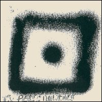
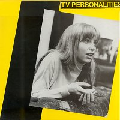
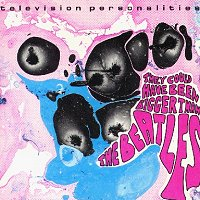

Television Personalities |
 1982 - Whaam! - BIG 4 - LP Songs: Three Wishes David Hocney's Diary In A Perfumed Garden Flowers For Abigail King And Country The Boy In A Paisley Shirt Games For Boys Painer Man (Pickett / Phillips) Psychedelic Holiday 14th Floor Sooty's Disco Party Makin' Time (Pickett / Phillips) When Emily Cries The Glittering Prizes Anxiety Block Mysterious Ways
Note: The original Whaam! release of "They Could
Have Been Bigger Than The Beatles" came packaged in many different hand painted
sleeves with no notes. Two examples are shown above. |
 1986 - Dreamworld - BIG DREAM 2 - LP Songs: (same as original) Produced by Steven Shorter. Berlin 1983. |
 1991 - Fire - REFIRE 9 - LP/CD/MC Songs: (same as original) All songs written by Dan Treacy and published by Twist And Shout Music. Except tracks 8 and 12 (Pickett / Phillips) published by Orbit music. Remastered by Phil Vinall and Barry Woodward at Townhouse. Sleve recreation by Hand And Eye. Television Personalities They Could Have Been Bigger Than The Beatles was recorded 1979-82 at Starforce Studios, Battersea, London SW11. The artistes were Daniel Treacy, Mark Sheppard, Edward Ball and Bernie The Bass. Thanks to Martin Daley. |